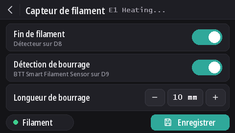

Capteurs de filament
Depuis la v2.0.5, ces firmwares lisent deux types de capteur : le détecteur de fin de filament Wanhao, et le BTT Smart Filament Sensor V2.0, qui remarque aussi quand le filament n'avance plus (bobine emmêlée, bourrage, filament rongé). La détection de fin de filament est active par défaut sur tous les modèles, et la détection de bourrage est désactivée.
La prise capteur

La prise 4 broches à gauche de POWER-DET, sous les prises des fins de course, porte D9, D8, GND et 5V, dans cet ordre. Les noms des broches viennent d'un schéma de câblage Wanhao que dustovich a retrouvé et partagé sur le Discord ; le dos de la carte marque les quatre mêmes broches CTRL, BTN, GND et VCC.
- D8 est l'entrée de fin de filament que lit le firmware Wanhao.
- D9 n'est pas utilisée par le firmware Wanhao : ces firmwares y lisent le signal de mouvement du capteur BTT.
À l'écran
Avec DGUS Reloaded 2.0 sur l'écran (firmware v2.0.9 ou plus récent) : Réglages → Filament → Capteur de filament.
- Fin de filament active ou désactive toute la détection, comme
M412 S1/M412 S0. - Détection de bourrage active la détection de bourrage avec la longueur réglée dessous, ou la désactive (
L0). - Longueur de bourrage : − et + la changent de 1 mm ; touchez le nombre pour la saisir.
- Le point Filament est vert quand le détecteur voit du filament, rouge sinon.
- Les changements s'appliquent tout de suite. Enregistrer les garde, comme
M500. La flèche de retour sort sans enregistrer : les réglages enregistrés reviennent au prochain démarrage.

Les commandes M412
Tout se règle en USB depuis un terminal série (Pronterface, le terminal de votre slicer ou d'OctoPrint, 250000
bauds). Les paramètres se combinent dans une même commande, par exemple M412 S1 L10.
| Commande | Ce qu'elle fait |
|---|---|
M412 | Affiche l'état, par exemple Filament runout ON ; Distance 5.00mm ; Motion distance 0.00mm. |
M412 S1 | Active la détection : le détecteur de fin de filament, et aussi la détection de bourrage si la longueur de bourrage n'est pas 0. |
M412 S0 | Désactive toute la détection, fin de filament et bourrage. |
M412 D5 | Quand le détecteur ne voit plus de filament, continue d'imprimer 5 mm avant la pause, pour utiliser le filament restant entre le capteur et la buse. 5 mm par défaut. |
M412 L10 | Active la détection de bourrage (capteur BTT uniquement) : pause quand 10 mm de filament passent dans l'extrudeur sans que la roue du capteur bouge. |
M412 L0 | Désactive la détection de bourrage sans toucher au détecteur de fin de filament. C'est le réglage par défaut. |
M500 | Enregistre les réglages. Sans lui, un changement est perdu à l'extinction. |
M119 | La ligne filament affiche TRIGGERED avec du filament, open sans. |
M412 L0, et L utilisé seul, viennent de notre modification de Marlin
(MarlinFirmware/Marlin#28585), intégrée à ces firmwares. Dans Marlin sans elle, L
seul est ignoré et L0 met tout de suite l'impression en pause pour bourrage.
Le détecteur de fin de filament Wanhao
Il indique au firmware si le filament est là. Quand il manque, l'impression se met en pause 5 mm de filament plus loin et l'écran lance un changement de filament.
Il est actif par défaut sur tous les modèles, depuis la v2.0.8. Sans rien de branché sur D8, la résistance de tirage de la carte maintient la broche à 5 V, ce qui se lit « filament présent » : la détection ne se déclenche alors jamais, elle peut donc rester active avec ou sans capteur. Branchez un détecteur sur D8 et il fonctionne tout de suite.
- La détection de bourrage reste désactivée (
L0) : ce détecteur ne voit pas le filament avancer. - Pour le désactiver :
M412 S0puisM500. - Les réglages enregistrés par une version précédente gardent leur état activé ou désactivé. Pour l'activer :
M412 S1puisM500, ou revenez aux réglages par défaut (M502puisM500, ce qui efface aussi le décalage Z de la sonde et le maillage).
BTT Smart Filament Sensor V2.0
Ce capteur a deux sorties, que le firmware lit différemment :
- Le détecteur de fin de filament (vers D8) donne un niveau : 5 V tant que le filament est là, 0 V quand il n'y en a plus.
- La sortie mouvement (vers D9) vient d'une petite roue que le filament fait tourner en passant. Tous les quelques millimètres de filament, la sortie bascule entre 0 V et 5 V. Le firmware ne regarde que ces changements : si l'extrudeur pousse la longueur de bourrage sans un seul changement, le filament ne suit pas (bobine emmêlée, bourrage, filament rongé), et l'impression se met en pause. Le détecteur de fin de filament ne peut pas le voir : pendant un bourrage, le filament est toujours là.
Branchement
5V sur 5V, GND sur GND, le signal de fin de filament sur D8 et le signal de mouvement sur D9. Les noms imprimés sur le câble du capteur peuvent être différents.
L'activer
M412 S1 L10
M500Si des impressions se mettent en pause sans raison, augmentez la longueur de bourrage : M412 L15 puis
M500. Pour ne garder que le détecteur de fin de filament : M412 L0 puis M500.
Le vérifier
M412: Filament runout ON ; Distance 5.00mm ; Motion distance 10.00mm.M119avec du filament : filament: TRIGGERED. Si cette ligne change quand vous poussez le filament à la main plutôt que quand vous l'insérez ou le retirez, les deux fils de signal sont inversés : échangez D8 et D9.
L0 jamais), mais pas encore avec le capteur BTT lui-même. Si le détecteur est lu à l'envers
(open avec du filament), dites-le sur Discord.Mise à jour depuis la v2.0.5 ou la v2.0.6
Ces versions ne pouvaient pas désactiver la détection de bourrage, elles utilisaient donc une longueur de bourrage
censée ne jamais être atteinte : 100 m en v2.0.5 (trop court en réalité : environ un tiers de bobine de 1 kg, au-delà
duquel une imprimante restée allumée pouvait se mettre en pause pour rien) et 10 km en v2.0.6. Au démarrage, la
v2.0.7 charge ces deux valeurs comme L0. Une vraie longueur réglée pour un capteur BTT, comme
L10, est conservée. Depuis la v2.0.4 ou avant, la distance de fin de filament de 5 mm est chargée à la
place du 0 enregistré par ces versions.